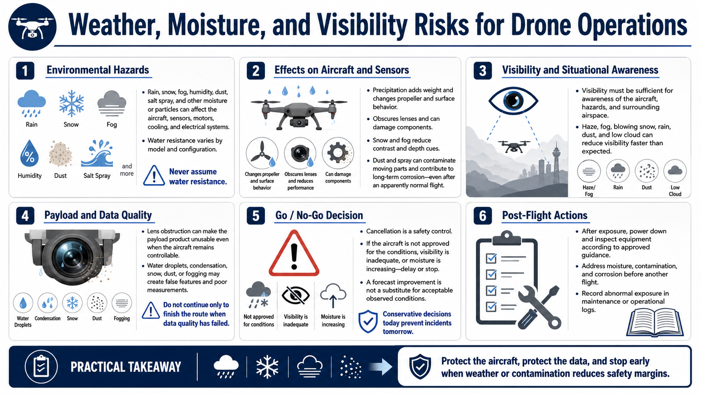

Precipitation, Moisture, and Visibility
Connecting to LMS... Progress: in progress

Narration
Rain, snow, fog, humidity, dust, salt spray, and other moisture or particles can affect aircraft, sensors, motors, cooling, and electrical systems. Water resistance varies by model and configuration; it should never be assumed from appearance.
Precipitation adds weight, changes propeller and surface behavior, obscures lenses, and can damage components. Snow and fog reduce contrast and depth cues. Dust or spray can contaminate moving parts and create long-term corrosion after an apparently normal flight.
Visibility must support awareness of the aircraft, hazards, and surrounding airspace under applicable rules and operational needs. Haze, fog, blowing snow, rain, dust, and low cloud can reduce visibility faster than an operator expects.
Lens obstruction can make the payload product unusable even when the aircraft remains controllable. Water droplets, condensation, snow, dust, or fogging may create false features and poor measurements. Do not continue solely to finish a route when data quality has failed.
Cancellation is a safety control. If the aircraft is not approved for the conditions, visibility is inadequate, or moisture is increasing, delay or stop. A forecast break in weather is not a substitute for acceptable observed conditions.
After exposure, power down and inspect equipment according to approved guidance. Address moisture, contamination, and corrosion before another flight, and record abnormal exposure in maintenance or operational logs.